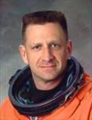

Lyndon B. Johnson Space Center
Houston, Texas 77058
|
National Aeronautics and Space Administration Lyndon B. Johnson Space Center Houston, Texas 77058 |
 |
Biographical Data |
||
CHRISTOPHER J. GUS LORIA (COLONEL, USMC, RET.)
NASA ASTRONAUT (FORMER)
PERSONAL DATA: Born July 9, 1960 in Belmont, Massachusetts, he considers League City, Texas, his hometown. He is married to the former Jamie Ann Fraser, and he has three children. His mother, Joan Loria, resides in Belmont, Massachusetts. His father, Robert L. Loria, is deceased.
EDUCATION: Graduate of Belmont High School (1978), and the US Naval Academy Preparatory School (1979). Bachelor of Science degree in General Engineering from the U.S. Naval Academy (1983). Master in Public Administration from John F. Kennedy School of Government, Harvard University (2004).
ORGANIZATIONS: Harvard Alumni Association, Society of Experimental Test Pilots, U.S. Naval Academy Alumni Association, Marine Corps Aviation Association, National Rifle Association.
SPECIAL HONORS: NASA Fellow, NASA Acquisition Improvement Award, NASA Group Achievement Award, Naval Test Wing Atlantic Test Pilot of the Year 1995-1996. Personal awards include the Defense Superior Service Medal, 3 Meritorious Service Medals, 2 Navy Commendation Medals (1 with V), 2 Air Medals (both with V), 4 Strike Flight Air Medals, Navy Achievement Medal.
EXPERIENCE: Loria received his commission from the Naval Academy in 1983, and was designated a Naval Aviator in July 1988. He transitioned to the F/A-18 Hornet with Strike Fighter Squadron 125 (VFA-125) at Naval Air Station Lemoore, California, during August 1988 through August 1989. His next assignments were with Marine Fighter Attack Squadrons 314 and 101 (VMFA-314 the Black Knights and VMFAT-101 the Sharpshooters) at Marine Corps Air Station El Toro, California. While assigned to the Black Knights he deployed to Bahrain for Operations Desert Shield and Desert Storm where he flew 42 combat missions in support of allied operations. He graduated with Class 93A from the United States Air Force Test Pilot School at Edwards Air Force Base, California in December of 1993. January 1994 to July 1996, he was assigned to VX-23, the Strike Aircraft Test Squadron, Naval Air Station Patuxent River, Maryland, as an experimental test pilot. Loria distinguished himself in the areas of high angle of attack flight test, ordnance, flight controls and aircraft flying qualities testing for the F/A-18 Hornet, and aircraft departure and spin testing for the F/A-18A-D models and the NASA Dryden F/A-18 HARV thrust vectoring aircraft.
He has 3,079 hours of flight time and has flown 32 different aircraft.
NASA EXPERIENCE: Previous NASA experience includes assignment as test pilot and Project Officer for the Department of the Navy on the X-31 Program at the NASA Dryden Flight Research Facility, Edwards Air Force Base, California, from July 1994 to June 1995.
Selected by NASA in April 1996, Loria reported to the Johnson Space Center in August 1996. He completed two years of training and evaluation, and was qualified for flight assignment as a pilot. Loria had technical duties in the Astronaut Office with the Space Shuttle and International Space Station Programs as well as an Ascent and Entry CAPCOM. Assigned as pilot on STS-113, Loria sustained back injuries off duty that medically grounded him and required his replacement on the crew. From September 2002 through July 2003 he served as the Chief Test Pilot for the Orbital Space Plane Program. Selected by the NASA Headquarters Executive Development Education panel, Loria graduated from the Kennedy School of Government, Harvard University, with a Masters in Public Administration in June of 2004. From August 2004 through February 2005 he was assigned as the Deputy Chief Engineer, Constellation Program at NASA Headquarters. In the fall of 2005 a NASA medical evaluation determined that his previous injuries disqualified him from further space flight assignments. Colonel Loria requested a transfer back to the US Marine Corps and left NASA in February 2005.
NOVEMBER 2009
This is the only version available from NASA. Updates must be sought direct from the above named individual.